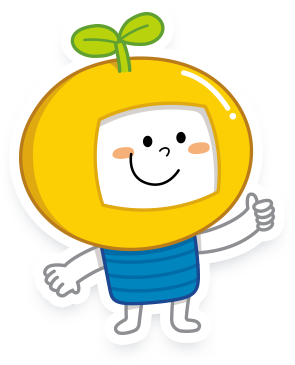
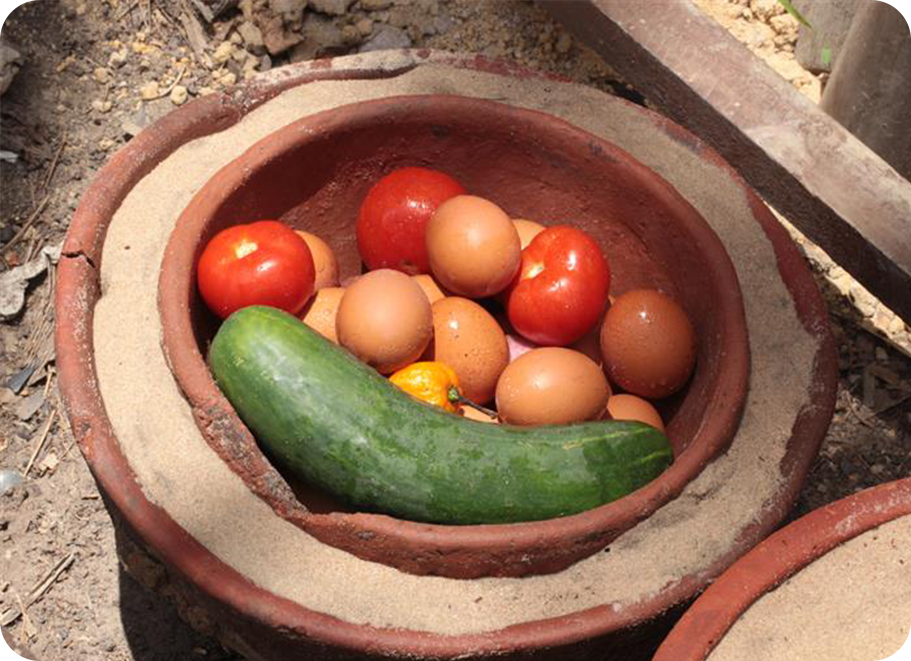
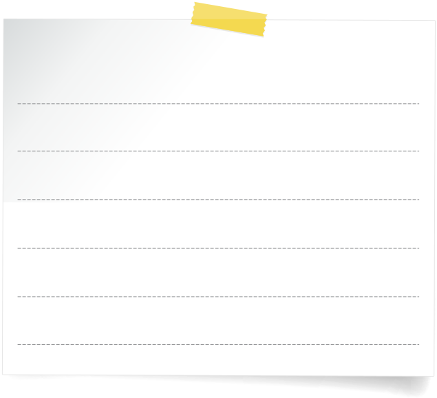
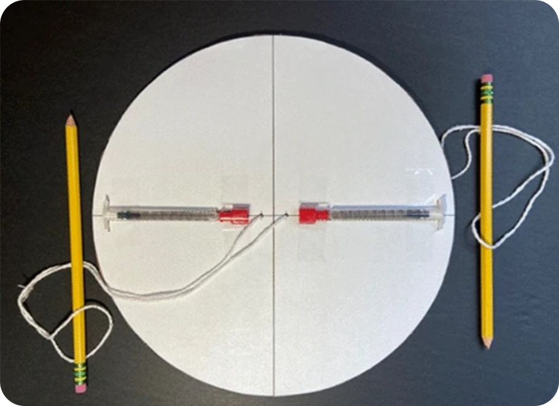
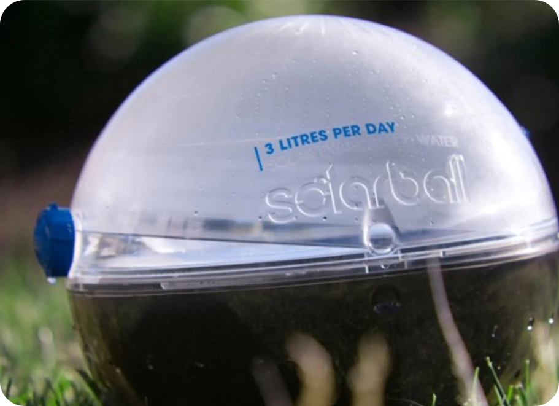
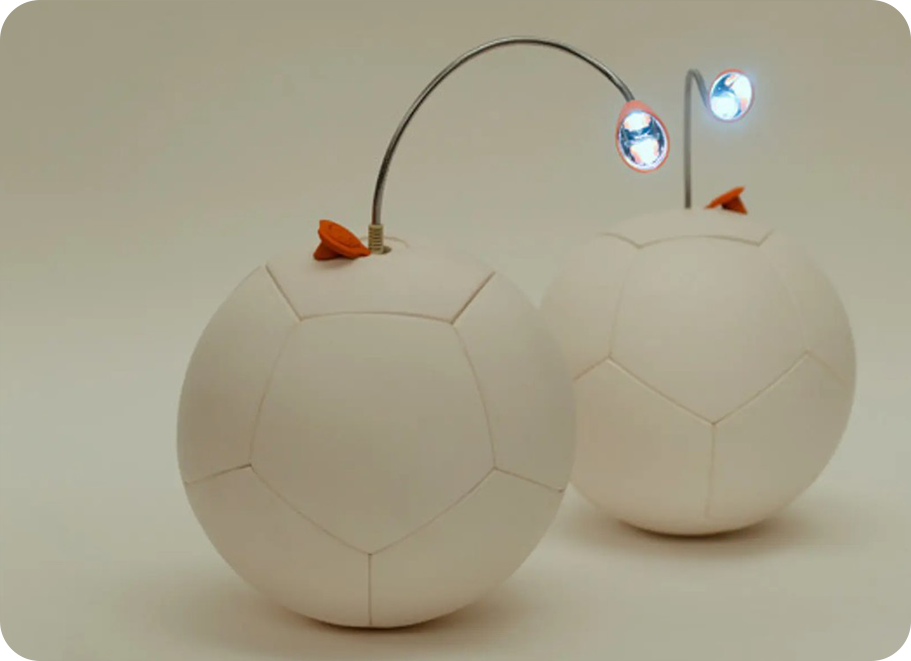
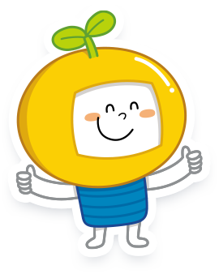

적정 기술로 알아보는 나눔과 공유의 가치
기술의 혜택에서 소외된 사람들이 적은 비용으로
기술의 혜택을 쉽게 누릴 수 있도록 해당 지역의
환경이나 사회, 경제 측면을 고려하여 발명한 것

교과서에서 소개한
적정 기술 외에도
여러 적정 기술이 있어요!


큰 항아리 안에 작은 항아리를 넣고,
그 사이에 젖은 모래를 채우면 물이
증발하면서 온도가 낮아져요. 그래서
더운 지역에서도 음식을 신선하게
보관할 수 있지요. 전기가 필요 없는
친환경 냉장고예요.


오염된 물을 넣고 햇빛을 쬐면 물이
증발되어 수증기가 되었다가 깨끗한
물방울로 변해요. 깨끗한 물은 윗부
분에 모이고 오염 물질은 바닥으로
가라앉지요. 깨끗한 물을 구하기 힘든
지역에서 활용해요.

전기를 쓸 수 있게 해 주어요.


나눔과 공유의 가치를
실현하는 적정 기술을
살펴보았어요!